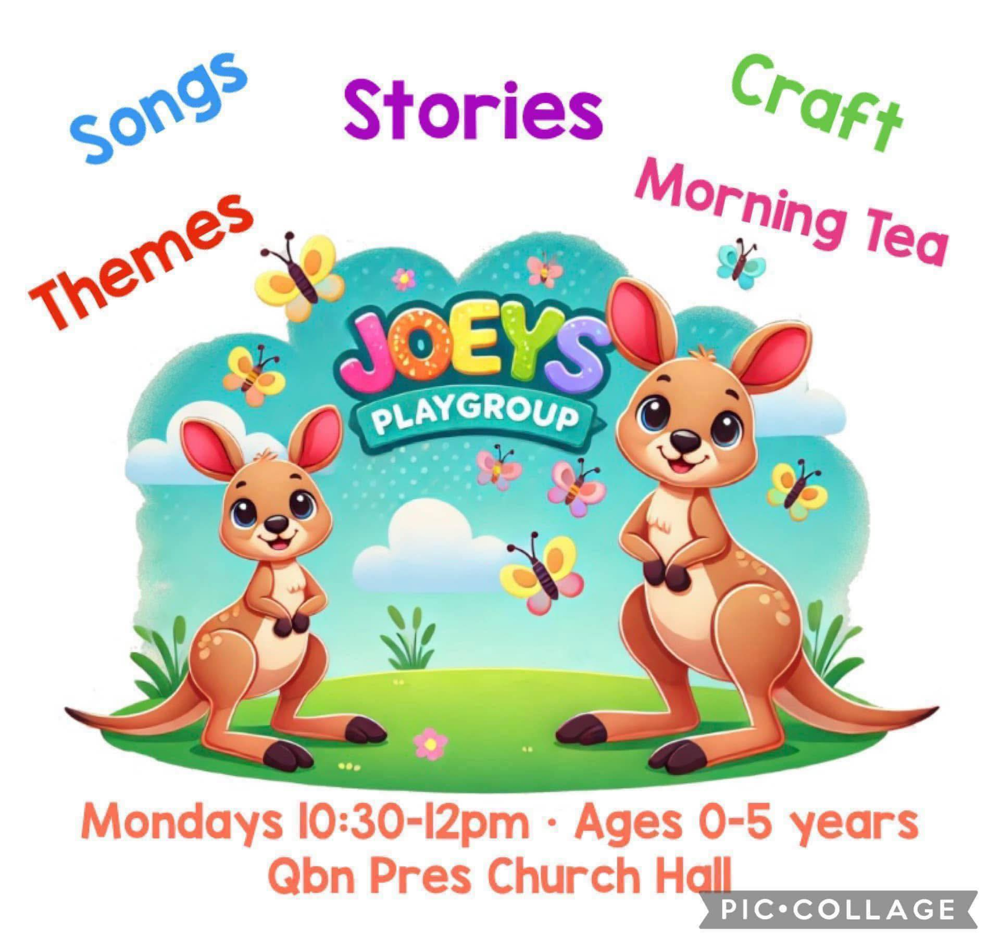
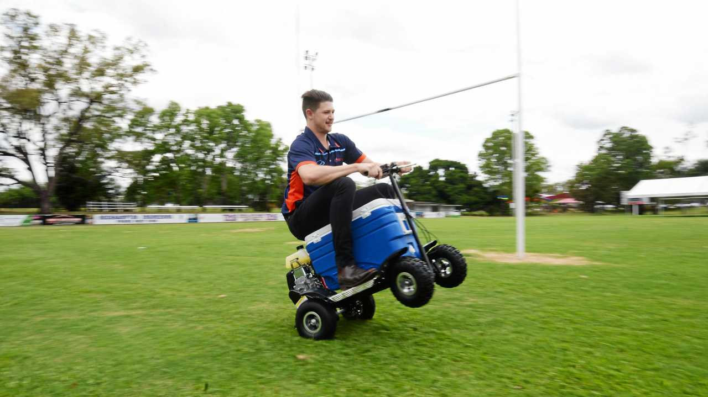
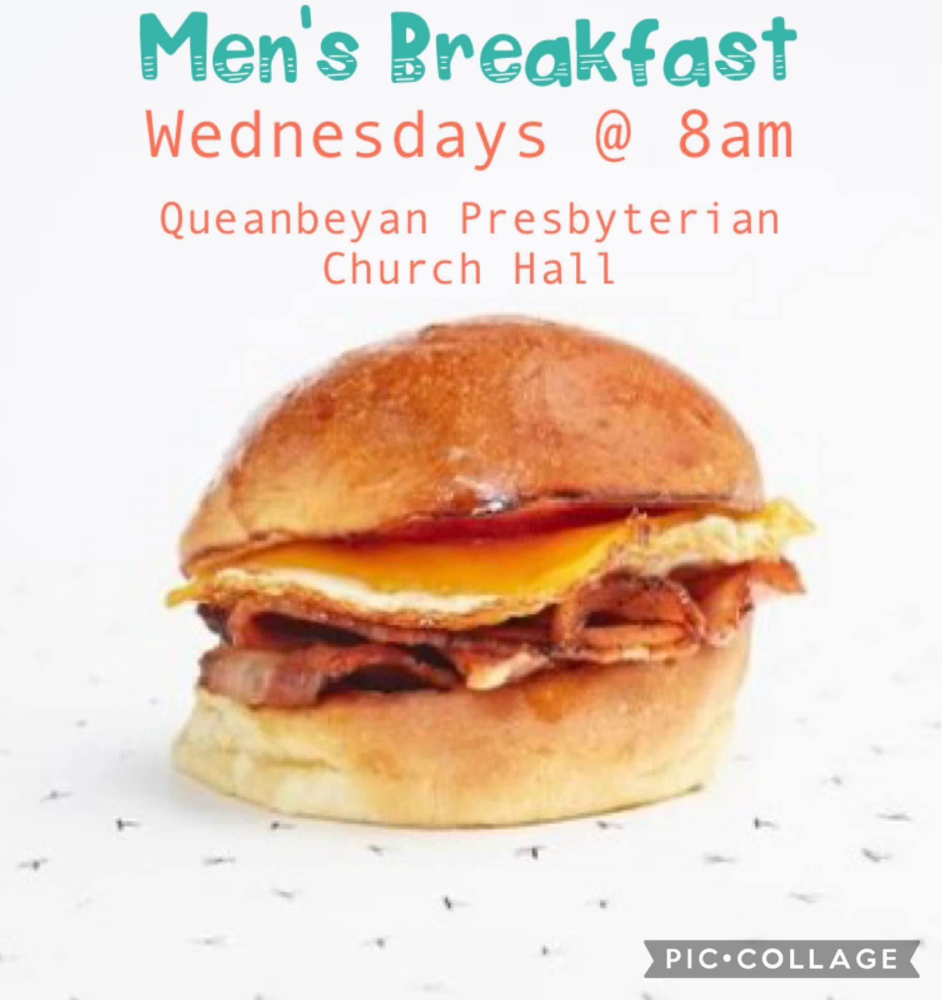
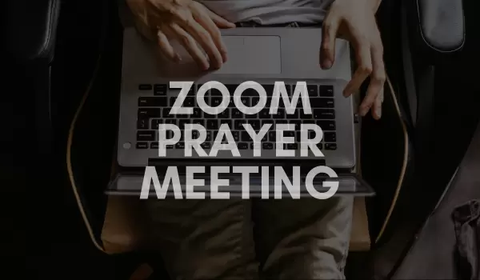
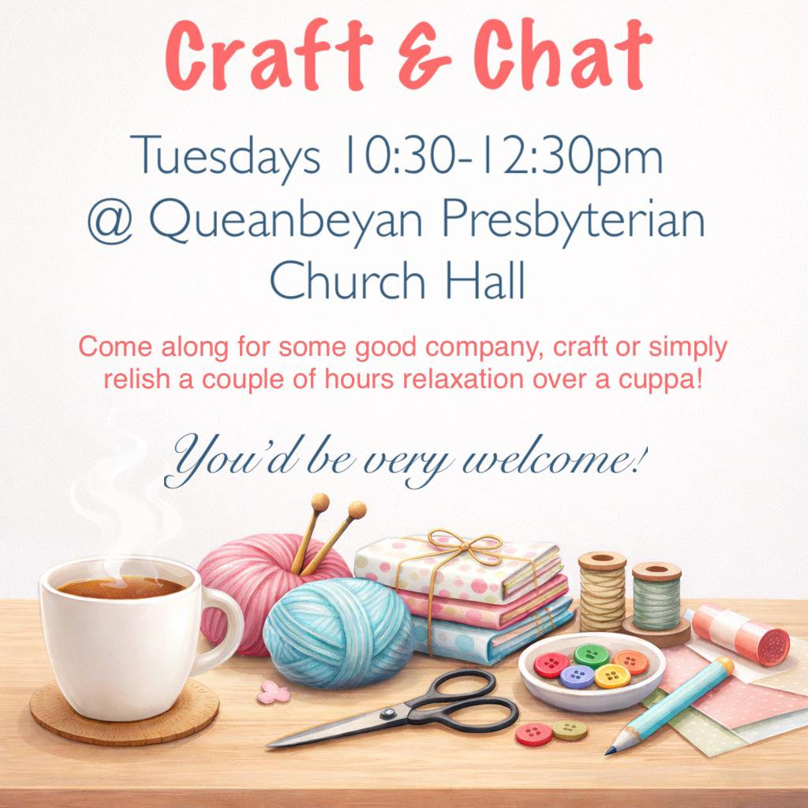

A community gathered around Christ, growing in faith, and reaching into our neighbourhood. Here's how we live that out week by week.
Our Sunday morning services are the centre of our life together. Our goal is to engage both hearts and minds in focused, heartfelt worship of Jesus Christ — who we believe is the head of the Church.
Musically, we hold true to time tested hymns. The service has no frills: we sing, pray, read the Bible, and listen to expository teaching. There's always morning tea afterwards — please plan to stay.
We run two services to make gathering accessible for everyone. Children's ministry runs during both services; kids are warmly welcomed and will be cared for in age-appropriate teaching.
Beyond Sunday, we gather in smaller groups throughout the week: to study Scripture, support one another, and serve our community. There's a place here for everyone.

A welcoming space for parents and young children to connect, play, and build community. A great way to meet other families and be part of church life during the week.

Where horsepower meets fellowship. Every Thursday night we fuel up with dinner and a discussion, then roll up our sleeves in the workshop. Born from the electric dreams of three mates, M3 is now a revving community with hearts charged by faith and electric "eskie racers." Want to join the circuit? Contact Robert.

Rise, shine, and join us for more than just the first meal of the day. We gather to share a hearty brekkie and our lives; laughter, stories, and a short devotional sets the tone before the workday. The eggs are on us (hopefully not burnt).

Each week we gather online to pray, give thanks, and bring the needs of our church, community, and world before God. A relaxed and welcoming time. You don't need to be confident praying aloud to join in. Many people simply listen and agree in prayer.
Small groups are a key part of life at QPC - a place to build meaningful relationships, open the Bible together, pray, and encourage one another. Two groups currently run: a Tuesday evening group in Googong (hosted by the Bentley family), and a Thursday morning Ladies Bible Study.

Unleash your creativity every Tuesday afternoon. As we share lunch together, we dive into a colourful array of activities: cardmaking, vinyl shirts, and more. Whether you're a seasoned crafter or a curious first-timer, there's a seat, a sandwich, and a set of supplies with your name on it.
Whether you've been coming for years or just walked through the door for the first time, there is a place for you in the life of this church. We'd love to help you find it.
Get in TouchSubscribe to the podcast and get new sermons automatically every week — on Spotify, Apple Podcasts, or any podcast app.
Listen on Spotify